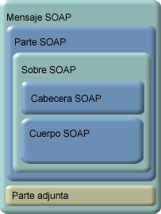
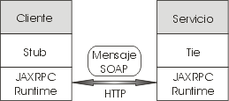

Introducción a los Servicios Web Seguros
- ¿Qué es un Servicio Web?
- Características de los Servicios Web
- Arquitecturas Orientadas a Servicios
- Arquitectura de los Servicios Web
- Tecnologías básicas
- Tecnologías J2EE para Servicios Web
- Invocación de Servicios
- Implementación de los Servicios Web en Java
- Tipos de datos compatibles
- Implementación del servicio: Fichero JWS
- Servicios Web Avanzados
- Ejercicios
El diseño del software tiende a ser cada vez más modular. Las aplicaciones se componen de una serie de componentes (servicios) reutilizables, que pueden encontrarse distribuidos a lo largo de una serie de máquinas conectadas en red.
Los Servicios Web nos permitirán distribuir nuestra aplicación a través de Internet, pudiendo una aplicación utilizar los servicios ofrecidos por cualquier servidor conectado a Internet.
Dado el carácter distribuido de las aplicaciones empresariales que utilizan servicios web, es natural que éstas se extiendan fuera del ámbito de la intranet empresarial. Llegado este punto, es imprescindible utilizar tecnologías de seguridad para asegurar que otros no puedan leer el contenido, o bien para asegurar que el emisor y el receptor son quienes dicen ser (garantizar la confidencialidad y la integridad).
¿Qué es un Servicio Web?
Un Servicio Web es un componente al que podemos acceder mediante protocolos Web estándar, utilizando XML para el intercambio de información.
Normalmente nos referimos con Servicio Web a una colección de procedimientos (métodos) a los que podemos llamar desde cualquier lugar de Internet o de nuestra intranet, siendo este mecanismo de invocación totalmente independiente de la plataforma que utilicemos y del lenguaje de programación en el que se haya implementado internamente el servicio.
Cuando conectamos a un servidor web desde nuestro navegador, el servidor nos devuelve la página web solicitada, que es un documento que se mostrará en el navegador para que lo visualice el usuario, pero es difícilmente entendible por una máquina. Podemos ver esto como web para humanos. En contraposición, los Servicios Web ofrecen información con un formato estándar que puede ser entendido fácilmente por una aplicación. En este caso estaríamos ante una web para máquinas.
Características de los Servicios Web
Las características deseables de un Servicio Web son:
- Un servicio debe poder ser accesible a través de la Web. Para ello debe utilizar protocolos de transporte estándares como HTTP, y codificar los mensajes en un lenguaje estándar que pueda conocer cualquier cliente que quiera utilizar el servicio.
- Un servicio debe contener una descripción de sí mismo. De esta forma, una aplicación podrá saber cuál es la función de un determinado Servicio Web, y cuál es su interfaz, de manera que pueda ser utilizado de forma automática por cualquier aplicación, sin la intervención del usuario.
- Debe poder ser localizado. Deberemos tener algún mecanismo que nos permita encontrar un Servicio Web que realice una determinada función. De esta forma tendremos la posibilidad de que una aplicación localice el servicio que necesite de forma automática, sin tener que conocerlo previamente el usuario.
Arquitecturas Orientadas a Servicios
Las arquitecturas orientadas a servicios (SOA) se basan en el desarrollo de servicios altamente reutilizables, y en la combinación de estos servicios para dar lugar a nuestra aplicación.
Estos servicios idealmente deberían tener una interfaz estándar bien definida, de forma que se pueda integrar fácilmente en cualquier aplicación. Además no debe tener estado, ni depender del estado de otros componentes. Debe recibir toda la información necesaria en la petición.
Se conoce como orquestación de servicios la secuenciación de llamadas a diferentes servicios para realizar un determinado proceso de negocio. Al no tener estado, los servicios se podrán secuenciar en cualquier orden, pudiendo formar así diferentes flujos que implementen la lógica de negocio.
Normalmente cuando hablamos de arquitecturas orientadas a servicios pensamos en su implementación mediante servicios web. Sin embargo, estas arquitecturas puedes estar formadas por cualquier tipo de servicio, como pueden ser por ejemplo servicios accesibles mediante JMS. En el caso de una SOA implementada mediante Servicios Web, sus servicios serán accesibles a través de la web.
En una arquitectura orientada a servicios podemos distinguir tres agentes con diferentes funciones:
| Proveedor de servicio | Implementa unas determinadas operaciones (servicio). Un cliente podrá solicitar uno de estos servicios a este proveedor. | |
| Cliente del servicio | Invoca a un proveedor de servicio para la realización de alguna de los operaciones que proporciona. | |
| Registro de servicios | Mantiene una lista de proveedores de servicios disponibles, junto a sus descripciones. | |
El mecanismo básico de invocación de servicios consistirá en que un cliente solicitará un determinado servicio a un proveedor, efectuando el proveedor dicho servicio. El servidor devolverá una respuesta al cliente como resultado del servicio invocado.
Esto podremos hacerlo así si el cliente conoce de antemano el proveedor del cual va a obtener el servicio. Pero hemos de pensar que en Internet encontraremos una gran cantidad de Servicios Web dispersos, lo cual hará difícil localizar el que busquemos. Además, si hemos localizado uno que realiza la función que necesitamos, si dicho servicio no está mantenido por nosotros puede ocurrir que en algún momento este servicio cambie de lugar, de interfaz o simplemente desaparezca, por lo que no podremos confiar en que vayamos a poder utilizar siempre este mismo servicio.
Los registros de servicios nos permiten automatizar la localización de Servicios Web. Un proveedor puede anunciarse en un determinado registro, de forma que figurará en dicho registro la localización de este servicio junto a una descripción de su funcionalidad y de su interfaz, que podrá ser entendida por una aplicación.
Cuando un cliente necesite un determinado servicio, puede acudir directamente a un registro y solicitar el tipo de servicio que necesita. Para ello es importante establecer un determinada semántica sobre las posibles descripciones de funcionalidades de servicios, evitando las posibles ambigüedades.
El registro devolverá entonces una lista de servicios que realicen la función deseada, de los cuales el cliente podrá elegir el más apropiado, analizar su interfaz, e invocarlo.
Arquitectura de los Servicios Web
Los protocolos utilizados en los Servicios Web se organizan en una serie de capas:
| Capa | Descripción | |
| Transporte de servicios | Es la capa que se encarga de transportar los mensajes entre aplicaciones. Normalmente se utiliza el protocolo HTTP para este transporte, aunque los servicios web pueden viajar mediante otros protocolos de transferencia de hipertexto como SMTP, FTP o BEEP. | |
| Mensajería XML | Es la capa responsable de codificar los mensajes en XML de forma que puedan ser entendidos por cualquier aplicación. Puede implementar los protocolos XML-RPC o SOAP. | |
| Descripción de servicios | Se encarga de definir la interfaz pública de un determinado servicio. Está definición se realiza mediante WSDL. | |
| Localización de servicios | Se encarga del registro centralizado de servicios, permitiendo que estos sean anunciados y localizados. Para ello se utiliza el protocolo UDDI. | |
Más adelante describiremos cada una de las tecnologías para Servicios Web vistas en las distintas capas.
Tecnologías básicas
Tenemos una serie de tecnologías, todas ellas basadas en XML, que son fundamentales para el desarrollo de Servicios Web. Estas tecnologías son independientes tanto del SO como del lenguaje de programación utilizado para implementar dichos servicios. Por lo tanto, serán utilizadas para cualquier Servicio Web, independientemente de la plataforma sobre la que construyamos dichos servicios (como puede ser J2EE o .NET).
SOAP
Se trata de un protocolo derivado de XML que nos sirve para intercambiar información entre aplicaciones.
Normalmente utilizaremos SOAP para conectarnos a un servicio e invocar métodos remotos, aunque puede ser utilizado de forma más genérica para enviar cualquier tipo de contenido. Podemos distinguir dos tipos de mensajes según su contenido:
- Mensajes orientados al documento: Contienen cualquier tipo de contenido que queramos enviar entre aplicaciones.
- Mensajes orientados a RPC: Este tipo de mensajes servirá para invocar procedimientos de forma remota (Remote Procedure Calls). Podemos verlo como un tipo más concreto dentro del tipo anterior, ya que en este caso como contenido del mensaje especificaremos el método que queremos invocar junto a los parámetros que le pasamos, y el servidor nos deberá devolver como respuesta un mensaje SOAP con el resultado de invocar el método.
Puede ser utilizado sobre varios protocolos de transporte, aunque está especialmente diseñado para trabajar sobre HTTP.
Dentro del mensaje SOAP podemos distinguir los siguientes elementos:
- Un sobre (Envelope), que describe el mensaje, a quien va dirigido, y cómo debe ser procesado. El sobre incluye las definiciones de tipos que se usarán en el documento. Contiene una cabecera de forma opcional, y el cuerpo del mensaje.
- Una cabecera (Header) opcional, donde podemos incluir información sobre el mensaje. Por ejemplo, podemos especificar si el mensaje es obligatorio (debe ser entendido de forma obligatoria por el destinatario), e indicar los actores (lugares por donde ha pasado el mensaje).
- El cuerpo del mensaje (Body), que contiene el mensaje en si. En el caso de los mensajes RPC se define una convención sobre como debe ser este contenido, en el que se especificará el método al que se invoca y los valores que se pasan como parámetros. Puede contener un error de forma opcional.
- Un error (Fault) en el cuerpo del mensaje de forma opcional. Nos servirá para indicar en una respuesta SOAP que ha habido un error en el procesamiento del mensaje de petición que mandamos.
Hemos visto como los mensajes SOAP nos sirven para intercambiar cualquier documento XML entre aplicaciones. Pero puede ocurrir que necesitemos enviar en el mensaje datos que no son XML, como puede ser una imagen. En ese caso tendremos que recurrir a la especificación de mensajes SOAP con anexos.
Los mensajes SOAP con anexos añaden un elemento más al mensaje:

- El anexo (Attachment), puede contener cualquier tipo de contenido (incluido el XML). De esta forma podremos enviar cualquier tipo de contenido junto a un mensaje SOAP.
Nuestro mensaje podrá contener tantos anexos como queramos.
Un ejemplo de mensaje SOAP es el siguiente:
<SOAP-ENV:Envelope
xmlns:SOAP-ENV="http://schemas.xmlsoap.org/soap/envelope/"
SOAP-ENV:encodingStyle="http://schemas.xmlsoap.org/soap/encoding/">
<SOAP-ENV:Body>
<ns:getTemperatura xmlns:ns="http://j2ee.ua.es/ns">
<area>Alicante</area>
</ns:getTemperatura>
</SOAP-ENV:Body>
</SOAP-ENV:Envelope>
En él estamos llamando a nuestro método getTemperatura para obtener información meteorológica, proporcionando como parámetro el área de la que queremos obtener la temperatura.
Podemos encontrar la especificación de SOAP y SOAP con anexos publicada en la página del W3C, en las direcciones http://www.w3.org/TR/SOAP/ y http://www.w3.org/TR/SOAP-attachments respectivamente.
WSDL
Es otro lenguaje derivado de XML, que se utiliza para describir los Servicios Web, de forma que una aplicación pueda conocer de forma automática la función de un Servicio Web, así como la forma de uso de dicho Servicio Web.
El fichero WSDL describirá la interfaz del Servicio Web, con los métodos a los que podemos invocar, los parámetros que debemos proporcionarles y los tipos de datos de dichos parámetros.
Si desarrollamos un Servicio Web, y queremos que otras personas sean capaces de utilizar nuestro servicio para sus aplicaciones, podremos proporcionar un documento WSDL describiendo nuestro servicio. De esta forma, a partir de este documento otros usuarios podrán generar aplicaciones clientes en cualquier plataforma (ya que WSDL se define como un estándar) que se ajusten a nuestro servicio.
El elemento raíz dentro de este fichero es definitions, donde se especifican los espacios de nombres que utilizamos en nuestro servicio. Dentro de este elemento raíz encontramos los siguientes elementos:
- types: Se utiliza para definir los tipos de datos que se intercambiarán en el mensaje.
- message: Define los distintos mensajes que se intercambiaran durante el proceso de invocación del servicio. Se deberán definir los mensajes de entrada y salida para cada operación que ofrezca el servicio. En el caso de mensajes RPC, en el mensaje de entrada se definirán los tipos de parámetros que se proporcionan, y en el de salida el tipo del valor devuelto.
- portType: Define las operaciones que ofrece el servicio. De cada operación indica cuales son los mensajes de entrada y salida, de entre los mensajes definidos en el apartado anterior.
- binding: Indica el protocolo y el formato de los datos para cada mensaje de los definidos anteriormente. Este formato puede ser orientado al documento u orientado a RPC. Si es orientado al documento tanto el mensaje de entrada como el de salida contendrán un documento XML. Si es orientado a RPC el mensaje de entrada contendrá el método invocado y sus parámetros, y el de salida el resultado de invocar dicho método, siguiendo una estructura más restrictiva.
- service: Define el servicio como una colección de puertos a los que se puede acceder. Un puerto es la dirección (URL) donde el servicio actúa. Esta será la dirección a la que las aplicaciones deberán conectarse para acceder al servicio. Además contiene la documentación en lenguaje natural del servicio.
Un documento WSDL de ejemplo es el siguiente:
<?xml version="1.0" encoding="utf-8" ?>
<definitions xmlns:s="http://www.w3.org/2001/XMLSchema"
xmlns:http="http://schemas.xmlsoap.org/wsdl/http/"
xmlns:soap="http://schemas.xmlsoap.org/wsdl/soap/"
xmlns:soapenc="http://schemas.xmlsoap.org/soap/encoding/"
xmlns:tns="http://j2ee.ua.es/wsdl"
xmlns:mime="http://schemas.xmlsoap.org/wsdl/mime/"
targetNamespace="http://j2ee.ua.es/wsdl"
xmlns="http://schemas.xmlsoap.org/wsdl/">
<message name="getTempRequest">
<part name="string_1"
xmlns:partns="http://www.w3.org/2001/XMLSchema"
type="partns:string" />
</message>
<message name="getTempResponse">
<part name="double_1"
xmlns:partns="http://www.w3.org/2001/XMLSchema"
type="partns:double" />
</message>
<portType name="TempPortType">
<operation name="getTemp">
<input message="tns:getTempRequest" />
<output message="tns:getTempResponse" />
</operation>
</portType>
<binding name="TempPortSoapBinding" type="tns:TempPortType">
<soap:binding style="rpc"
transport="http://schemas.xmlsoap.org/soap/http" />
<operation name="getTemp">
<soap:operation soapAction=" style="rpc" />
<input>
<soap:body use="encoded"
namespace="http://j2ee.ua.es/wsdl"
encodingStyle=
"http://schemas.xmlsoap.org/soap/encoding/" />
</input>
<output>
<soap:body use="encoded"
namespace="http://j2ee.ua.es/wsdl"
encodingStyle=
"http://schemas.xmlsoap.org/soap/encoding/" />
</output>
</operation>
</binding>
<service name="Temp">
<documentation>Documentacion</documentation>
<port name="TempPort" binding="tns:TempPortSoapBinding">
<soap:address
location="http://localhost:7001/sw_temp/Temp" />
</port>
</service>
</definitions>
En el que se define un servicio que proporciona el método getTemp, que toma como parámetro una cadena con el nombre del área que queremos consultar, y nos devuelve un valor real.
En los elementos message vemos que tenemos dos mensajes: los mensajes de entrada y salida de la operación getTemp de nuestro servicio. El mensaje de entrada contiene un dato de tipo string (el parámetro del método), y el de salida es de tipo double (la temperatura que devuelve el servicio).
El elemento portType define la operación getTemp a partir de los mensajes de entrada y salida que la componen, y en binding se establece esta operación como de estilo rpc, con codificación encoded. Esto es lo que se conoce como tipo rpc/encoded. Actualmente dicho tipo de servicios está desaprobado. Los servicios web deben ser en su lugar de tipo document/literal.
Por último en el apartado service se especifica el puerto al que podemos conectar para usar el servicio, dando la URL a la que nuestro cliente deberá acceder.
Podemos encontrar la especificación de WSDL publicada en la página del W3C, en la dirección http://www.w3.org/TR/wsdl.
Tecnologías de segunda generación
Una vez asentadas las tecnologías básicas para servicios web que hemos visto en los puntos anteriores, se empiezan a desarrollar extensiones sobre ellas para cubrir las necesidades que van apareciendo, entre las que encontramos:
- WS-Policy y WS-PolicyAttachment nos permitirán describir funcionalidades que no podíamos especificar con WSDL.
- WS-Security nos permitirá añadir características de seguridad adaptadas a las necesidades de seguridad de los Servicios Web. Con esta API podemos utilizar seguridad a nivel de mensaje (encriptando sólo determinadas partes del mensaje SOAP), mientras que con SSL sólo podríamos hacer que fuese seguro a nivel de transporte.
- WS-Addressing y WS-ReliableMessaging nos permitirán especificar la dirección de un servicio y realizar un control de flujo de los mensajes respectivamente. Gracias a esto se podrá por ejemplo implementar servicios con estado, o servicios que funcionen de forma asíncrona. Podremos hacer una petición sin quedarnos bloqueados esperando una respuesta, y recibir la respuesta mediante un callback.
- WS-Coordination o BPEL nos permitirán orquestar servicios web.
WS-I Basic Profile
La Web Services Interoperability Organization (WS-I) vela por el cumplimiento de los estándares en los servicios web, de forma que se garantice la interoperabilidad entre servicios web desarrollados en diferentes plataformas.
Hemos visto hasta el momento diferentes estándares que dan soporte a los servicios web (SOAP, WSDL). El problema es que dichos estándares contienen algunas ambigüedades, que pueden ser interpretadas de forma diferente por los desarrolladores de diferentes plataformas, y que tampoco se especifica como usar las tres tecnologías de forma conjunta para el desarrollo de servicios web (sólo se dan las especificaciones por separado). Para solucionar este problema la WS-I crea la especificación WS-I Basic Profile, para aclarar la forma en la que estas tecnologías deben ser utilizadas cuando las utilizamos para construir servicios web.
En el WS-I Basic Profile también se especifica como deben combinarse las tecnologías SOAP, WSDL y UDDI para el desarrollo de servicios web. Utilizaremos un registro UDDI para publicar los servicios. De estos servicios se publicará un documento WSDL como instrucciones de uso. En el WSDL figurará la interfaz del servicio, y la forma de acceder a él, que será mediante protocolo SOAP.
Por lo tanto, cuando desarrollemos servicios web que cumplan con dicho perfil, podremos tener la certeza de que podrán ser accedidos por clientes que también lo cumplan.
Tecnologías J2EE para Servicios Web
Hemos visto las tecnologías en las que se basan los Servicios Web, y que los hacen independientes de la plataforma y del lenguaje de programación utilizado. Sin embargo, escribir manualmente los mensajes SOAP desde nuestras aplicaciones puede ser una tarea tediosa. Por ello, las distintas plataformas existentes incorporan librerías y utilidades que se encargan de realizar esta tarea por nosotros.
En este tema veremos las librerías que incorpora Java EE para la generación y el procesamiento de código XML, que nos servirán para implementar y utilizar Servicios Web.
Hemos de destacar que las tecnologías Java para servicios web cumplen con el WS-I Basic Profile, por lo que tenemos garantizada la interoperabilidad con gran parte de los servicios web desarrollados en otras plataformas.
JAXP
La API JAXP nos permite procesar cualquier documento XML desde lenguaje Java. Tiene en cuenta los espacios de nombres, lo cual nos permite trabajar con DTDs que podrían tener conflictos de nombres si estos no estuviesen soportados. Además, soporta XSLT, lo cual nos permitirá convertir un documento XML a otro formato, como por ejemplo HTML.
Esta es una librería genérica, para procesar cualquier documento XML. A continuación veremos una serie de librerías, para tareas más especificas, que se apoyan en JAXP para realizar el procesado de diferentes lenguajes como SOAP, WSDL y UDDI, todos ellos derivados de XML. Por lo tanto, todas estas librerías dependerán de JAXP para su correcto funcionamiento.
JAXM
La API JAXM implementa la mensajería XML en Java orientada al documento. Nos permitirá de forma sencilla crear mensajes XML, insertando el contenido que queramos en ellos, y enviarlos a cualquier destinatario, así como extraer el contenido de los mensajes que recibamos. Permite enviar y recibir los mensajes de forma síncrona (modelo petición-respuesta) o asíncrona (envío de mensaje sin esperar respuesta).
Los mensajes XML con los que trabaja JAXM siguen la especificación SOAP y SOAP con anexos. Dentro de JAXM encontramos dos APIs:
- SAAJ (SOAP with Attachmets API for Java) es la API que se utiliza para construir mensajes SOAP y para extraer la información que contienen. Esta API es independiente, y suficiente para enviar mensajes de tipo petición-respuesta (síncronos).
- JAXM proporciona un proveedor de mensajería XML, con el que podremos enviar y recibir mensajes de forma asíncrona, sin necesidad de esperar una respuesta de la otra parte. Esta API dependerá de SAAJ para funcionar, ya que SAAJ es la que se encargará de crear y manipular los mensajes.
JAX-RPC / JAX-WS
La API JAX-RPC implementa la infraestructura para realizar llamadas a procedimiento remoto (RPC) mediante XML. En este caso se enviará un mensaje SOAP con el método que queremos invocar junto a los parámetros que le pasamos, y nos devolverá de forma síncrona una respuesta SOAP con el valor devuelto por el método tras su ejecución.
Por lo tanto, JAX-RPC dependerá de SAAJ para construir los mensajes SOAP, para enviarlos, y para extraer la información del mensaje SOAP que nos devuelve como resultado.
Esta API nos permitirá, de forma sencilla, invocar Servicios Web, así como crear nuestros propios Servicios Web a partir de clases Java que tengamos implementadas.
A partir de la versión 2.0, esta API pasa a recibir el nombre JAX-WS. Esta nueva versión se basa en JAXB para manipular los datos. Además permite el uso de la API Web Services Metadata for the Java Platform que permite construir los servicios web utilizando anotaciones.
JAXR
La API JAXR nos permitirá acceder a registros XML a través de una API estándar Java. Esta API pretende proporcionar una interfaz única para acceder a distintos tipos de registros, cada uno de los cuales tiene un protocolo distinto.
Actualmente JAXR es capaz de trabajar con registros UDDI y ebXML. Podremos realizar dos tipos de tareas distintas cuando accedamos a un registro mediante JAXR:
- Consultar el registro, para localizar los servicios que necesitemos.
- Publicar un servicio en el registro, para que otros clientes sean capaces de localizarlo cuando lo necesiten, así como modificar o eliminar los servicios publicados que sean de nuestra propiedad.
JAXB
La API de JAXB (Java API for Binding) nos permite asociar esquemas XML y código Java. A partir de un esquema XML, podremos generar una clase Java que represente dicho esquema.
De esta forma podremos convertir un documento XML a una serie de objetos Java que contendrán la información de dicho documento (unmarshalling). Podremos entonces trabajar desde nuestra aplicación con estos objetos, accediendo y modificando sus valores. Finalmente, podremos volver a obtener un documento XML a partir de los objetos Java (marshalling).
Esto nos va a simplificar la tarea de utilizar tipos de datos propios en llamadas a Servicios Web, ya que utilizando JAXB podremos realizar de forma sencilla la conversión entre nuestra clase Java y un documento XML con la información de dicha clase.
Otras librerías
Además de las APIs Java estándar para servicios web, encontramos también algunas librerías adicionales desarrolladas por terceros que pueden sernos de utilidad. Por ejemplo, vamos a ver una serie de librerías para trabajar con servicios web que se encuentran enmarcadas dentro del proyecto Apache. Más adelante estudiaremos el framework Axis, también de Apache, que es uno de los frameworks más utilizados para el desarrollo de servicios web en Java.
WSDL4J
La API de Java para WSDL (WSDL4J) nos permite de forma sencilla analizar documentos WSDL, y de esa forma poder descubrir las características de un servicio en tiempo de ejecución.
Mediante esta API, podremos "interrogar" un servicio a partir de su especificación WSDL, y obtener información como las operaciones que podemos invocar en este servicio, los parámetros que deberemos proporcionar a cada una de ellas, y el tipo de datos resultante que nos devuelven.
De esta forma podremos realizar la integración de la aplicación en tiempo de ejecución, ya que no será necesario indicar al programa cómo debe acceder a un servicio, ni los métodos a los que debe llamar, sino que el programa será capaz de determinar esta información analizando la especificación WSDL del servicio. Si estamos interesados en acceder a los servicios web de esta forma, lo más inmediato será utilizar directamente la siguiente API.
WSIF
La API Web Services Invocation Framework (WSIF) nos va a permitir acceder a los servicios web directamente a partir del WSDL, sin tener que programar el acceso mediante SOAP, ni crear ningún stub que haga esto. Gracias a esta API podremos hacer de forma sencilla una integración dinámica y muy débilmente acoplada de cualquier servicio web en nuestras aplicaciones.
UDDI4J
Otra de las librerías para servicios web de Apache es UDDI4J. Esta librería nos permite acceder a registros UDDI desde Java. Los registros UDDI se utilizan para localizar servicios web. A diferencia de JAXR, esta librería se centra únicamente en UDDI, sin pretender ser una librería genérica para acceso a registros XML. Esto hace que resulte más sencillo trabajar con ella, ya que está adaptada a la nomenclatura utilizada en UDDI.
Invocación de Servicios
Vamos a ver ahora cómo invocar Servicios Web desde Java. Para ello contamos con la API JAX-WS (o JAX-RPC en versiones anteriores). Con esta librería podremos ejecutar procedimientos de forma remota, simplemente haciendo una llamada a dicho procedimiento, sin tener que introducir apenas código adicional. Será JAX-WS quien se encargue de gestionar internamente la conexión con el servicio y el manejo de los mensajes SOAP de llamada al procedimiento y de respuesta.
Podemos encontrar las clases de la API de JAX-WS dentro del paquete javax.xml.ws y en subpaquetes de éste.
Nuestro cliente Java realizado con JAX-WS será interoperable con prácticamente todos los servicios creados desde otras plataformas que cumplan el estándar WS-I.
Tipos de acceso
Tenemos dos formas diferentes de invocar un Servicio Web utilizando JAX-WS o JAX-RPC:
-
Creación de un stub estático: Consiste en
generar una capa de stub por debajo del cliente de forma automática.
Dicho stub implementará la misma interfaz que el servicio,
lo cuál nos permitirá desde nuestro cliente acceder al Servicio
Web a través del stub tal y como si estuviéramos accediendo
directamente al servicio.
Para utilizar este mecanismo es recomendable contar con alguna herramienta dentro de nuestra plataforma que nos permita generar dicho stub, para no tener que encargarnos nosotros de realizar esta tarea manualmente.
-
Utilización de la Interfaz de Invocación Dinámica
(DII): Esta forma de acceso nos permitirá hacer llamadas a
procedimientos de nuestro Servicio Web de forma dinámica, sin crear
un stub para ello. Utilizaremos este tipo de invocación cuando
no conozcamos la interfaz del servicio a priori, para invocarlo deberemos
proporcionar únicamente los nombres de los métodos a utilizar
mediante una cadena de texto.
Podremos utilizar esta interfaz dinámica aunque no contemos con un documento WSDL que nos indique la interfaz y datos de nuestro servicio. En este caso, deberemos proporcionar manualmente esta información, de forma que sea capaz de acceder al servicio correctamente.
Invocación mediante stub estático
Está será la forma más sencilla de acceder siempre que contemos con una herramienta que genera el stub de forma automática.
De esta forma, una vez generado el stub, sólo tendremos que utilizar este stub como si se tratase de nuestro servicio directamente. En el stub podremos hacer las mismas llamadas a métodos que haríamos directamente en la clase que implemente nuestro servicio, ya que ambos implementarán la misma interfaz.
Las herramientas para generar este stub variarán según la plataforma con la que trabajemos. A partir de JDK 1.6 se incluye en Java SE la librería JAX-WS y las herramientas necesarias para crear e invocar servicios. En el caso de contar con versiones anteriores de JDK, podemos o bien incorporar a nuestro proyecto las librerías necesarias (JAX-WS o JAX-RPC), o bien utilizar herramientas y librerías similares proporcionadas por los servidores de aplicaciones, como es el caso de Weblogic 9.2, o desarrolladas por terceros, como es el caso de Apache Axis, y de CXF.
Interfaz de invocación dinámica (DII)
Mediante esta interfaz ya no utilizaremos un stub para invocar los métodos del servicio, sino que nos permitirá invocar los métodos de forma dinámica, indicando simplemente el nombre del método que queremos invocar como una cadena de texto, y sus parámetros como un array de objetos.
Esto nos permitirá utilizar servicios que no conocemos previamente. De esta forma podremos implementar por ejemplo un broker de servicios. Un broker es un servicio intermediario, al que podemos solicitar alguna tarea que necesitemos. Entonces el broker intentará localizar el servicio más apropiado para dicha tarea en un registro de servicios, y lo invocará por nosotros. Una vez haya conseguido la información que requerimos, nos la devolverá. De esta forma la localización de servicios se hace totalmente transparente para nosotros.
Podremos acceder con esta interfaz tanto si contamos con un documento WSDL como si no contamos con él, pero en el caso de que no tengamos el WSDL deberemos especificar en el código todos los datos incluidos en estos documentos que necesitemos y de los que en este caso no disponemos (endpoint, parámetros y tipos, etc).
A partir de un documento WSDL
Vamos a ver el caso en el que contamos con el documento WSDL que describe el servicio. El primer paso será conseguir el objeto Service igual que hicimos en el caso anterior:
ServiceFactory sf = ServiceFactory.newInstance();
Service serv = sf.createService(
new URL("http://localhost:7001/HolaMundo/hola?WSDL"),
new QName("http://jtech.ua.es", "Conversion"));
Utilizaremos el objeto Call para hacer las llamadas dinámicas a los métodos del servicio. Deberemos crear un objeto Call correspondiente a un determinado puerto y operación de nuestro servicio:
Call call = serv.createCall(
new QName("http://jtech.ua.es", "HolaMundoPortTypeSoapPort"),
new QName("http://jtech.ua.es", "saluda"));
El último paso será invocar la llamada que hemos creado:
Integer result = (Integer) call.invoke(
new Object[] { "Miguel" });
A este método le debemos proporcionar un array de objetos como parámetro, ya que debe poder utilizarse para cualquier operación, con diferente número y tipo de parámetros. Como tampoco se conoce a priori el valor devuelto por la llamada, deberemos hacer una conversión cast al tipo que corresponda, ya que nos devuelve un Object genérico.
Sin un documento WSDL
Si no contamos con el WSDL del servicio, crearemos un objeto Service proporcionando únicamente el nombre del servicio:
ServiceFactory sf = ServiceFactory.newInstance();
Service serv = sf.createService(
new QName("http://jtech.ua.es", "HolaMundo"));
A partir de este objeto podremos obtener un objeto Call para realizar una llamada al servicio de la misma forma que vimos en el caso anterior:
Call call = serv.createCall(
new QName("http://jtech.ua.es", "HolaMundoPortTypeSoapPort"),
new QName("http://jtech.ua.es", "saluda"));
En este caso el objeto Call no tendrá ninguna información sobre las características del servicio, ya que no tiene acceso al documento WSDL que lo describe, por lo que deberemos proporcionárselas nosotros explícitamente.
En primer lugar, deberemos especificar el endpoint del servicio, para que sepa a qué dirección debe conectarse para acceder a dicho servicio:
call.setTargetEndpointAddress(endpoint);
Una vez especificada esta información, deberemos indicar el tipo de datos que nos devuelve la llamada a la operación que vamos a invocar (en nuestro ejemplo saluda):
QName t_int =
new QName("http://www.w3.org/2001/XMLSchema", "int");
call.setReturnType(t_string);
Por último, indicaremos los parámetros de entrada que toma la operación y sus tipos:
QName t_double =
new QName("http://www.w3.org/2001/XMLSchema", "string");
call.addParameter("string_1", t_string, ParameterMode.IN);
Una vez hecho esto, podremos invocar dicha operación igual que en el caso anterior:
Integer result = (Integer) call.invoke(
new Object[] { "Miguel" });
Implementación de los Servicios Web en Java
En las aplicaciones basadas en JAX-RPC/WS encontramos los siguientes elementos:
- Servicio: Elemento del servidor que implementa la funcionalidad de nuestro servicio. Normalmente utilizaremos una clase Java o un EJB.
- Cliente: Aplicación cliente que invoca los métodos del servicio remoto. La localización del servicio será transparente para el desarrollador de esta aplicación, que invocará los métodos del servicio de la misma forma que si éste fuese local.
- Stub: Capa en el cliente que implementa la interfaz del servicio, y utiliza internamente JAX-RPC/WS para construir los mensajes SOAP necesarios para invocar cada método de la interfaz, y para leer el mensaje de respuesta que recibamos. Este stub será el sustituto del servicio en el lado del cliente, la aplicación cliente ejecutará en él los métodos que ofrece el servicio, haciendo de esta forma transparente la localización del servicio para ella.
- Tie: Capa en el servidor que decodificará los mensajes SOAP entrantes con destino a nuestro servicio, y leerá de ellos el método que se quiere invocar y los parámetros de entrada que se proporcionan. Esta capa accederá al componente (clase Java o EJB) que implementa nuestro servicio, ejecutando dicho método en él. Una vez obtenido el resultado, generará un mensaje SOAP de respuesta y lo devolverá al cliente.
- JAX-RPC/WS: Librería que nos permitirá analizar y componer mensajes SOAP, y enviarlos a través de protocolo HTTP. Además proporciona listeners y servlets que permanecerán a la escucha en el servidor para recibir mensajes entrantes de peticiones a los servicios. Una vez recibida una petición, utilizará la capa Tie del servicio correspondiente para invocarlo, proporcionándole a esta capa el mensaje SOAP entrante. A diferencia de las capas anteriores, que son específicas para un servicio concreto, la librería JAX-RPC/WS es genérica, nos servirá para cualquier servicio web SOAP.

Las únicas capas que debemos implementar nosotros son el Cliente y el Servicio. En la implementación de estos componentes el uso de la librería JAX-RPC/WS será totalmente transparente para nosotros. No hará falta que introduzcamos código JAX-RPC/WS dentro de ellas. En el servicio simplemente implementaremos los métodos que queremos que ofrezca nuestro servicio, como si se tratase de cualquier clase Java, y en el cliente podremos invocar los métodos de este servicio como si invocásemos directamente los métodos de la clase Java.
Las capas Stub y Tie, son capas construidas a medida para la interfaz de nuestro servicio. Estás son las capas que utilizarán JAX-RPC/WS para generar y leer los mensajes SOAP que vamos a utilizar para invocar el servicio, y devolver la respuesta al cliente. Generarán o serán capaces de leer los mensajes apropiados para el caso concreto de los métodos que definimos en nuestro servicio, por lo que deberemos generar estas capas para cada servicio que desarrollemos. Afortunadamente, normalmente contaremos con herramientas que generen de forma automática estas capas a partir de la interfaz de nuestro servicio, por lo que no será necesario que el desarrollador de servicios trate directamente con JAX-RPC/WS en ningún momento.
Tipos de datos compatibles
Cuando trabajamos con JAX-WS, los tipos de datos que podremos utilizar como tipo de los parámetros y de valor de retorno de los métodos de nuestro servicio serán los tipos soportados por JAXB.
Podremos utilizar cualquiera de los tipos básicos de Java:
boolean byte double float int long short char
Además, también podremos utilizar cualquiera de los wrappers de estos tipos básicos:
java.lang.Boolean java.lang.Byte java.lang.Double java.lang.Float java.lang.Integer java.lang.Long java.lang.Short java.lang.Character
Las siguientes clases de Java también son aceptadas como tipos válidos por JAX-WS:
java.lang.String java.math.BigDecimal java.math.BigInteger java.util.Calendar java.util.Date javax.xml.namespace.QName java.net.URI
Además de estos datos, se permitirá el uso de colecciones cuyos elementos podrán ser de cualquiera de los tipos admitidos. Estas colecciones podrán ser arrays, tanto unidimensionales como multidimensionales, o clases del marco de colecciones de Java:
Listas: List ArrayList LinkedList Stack Vector Mapas: Map HashMap Hashtable Properties TreeMap Conjuntos: Set HashSet TreeSet
Las clases desarrolladas por nosotros también podrán ser usadas si cumplen ciertas condiciones:
- Debe tener al menos un constructor público sin parámetros.
- No debe implementar la interfaz RMI java.rmi.Remote.
- Todos sus campos deben ser tipos soportados por JAX-WS. Estos campos pueden
ser públicos, protegidos o privados. Para que JAX-WS sea capaz de
leer o establecer los valores de estos campos deberá cumplirse que:
- Los campos públicos no deben ser ni final ni transient.
- Los campos no públicos deben tener sus correspondientes getters y setters.
Si nuestros tipos de datos no cumplen estas características, o bien estamos trabajando con herramientas que no soportan estos tipos, deberemos construir manualmente marshallers y unmarshallers para nuestras clases utilizando JAXB. Su función será realizar la conversión entre nuestra clase Java y su correspondiente formato como documento XML.
Implementación del servicio: Fichero JWS
Para implementar los servicios deberemos crear una clase JWS, que consiste en una clase Java con anotaciones de la API Web Services Metadata for the Java Platform (JSR-181). Parte de los métodos de esta clase se ofrecerán como operaciones del servicio web. Para poder ofrecer los métodos de esta clase como servicio web deberemos generar las capas vistas anteriormente. Para ello contaremos con diferentes herramientas, que dependerán de la plataforma de desarrollo que utilizamos. Posteriormente veremos tanto las herramientas incluidas en JDK 1.6 como las herramientas de Weblogic.
La API Web Services Metadata for the Java Platform viene a estandarizar la forma en la que se definen los Servicios Web en Java. Anteriormente, cada plataforma definía su propia forma de crear servicios web, por lo que, por ejemplo, un servicio web desarrollado con el JWSDP de Sun no podía desplegarse directamente en Weblogic. Además, el fichero JWS contendrá toda la información necesaria para generar el servicio, por lo que no hará falta tener la información sobre el servicio dispersa en diferentes ficheros como ocurría antes.
Para crear la clase JWS que implemente el servicio deberemos crear una clase con un constructor sin parámetros (si no se crea ningún constructor por defecto la clase tendrá un constructor sin parámetros vacío), y con al menos la anotación @WebService. Los métodos públicos que definamos en esta clase serán por defecto las operaciones que ofrecerá el servicio aunque, como veremos más adelante, también podemos especificar mediante anotaciones los métodos que queremos que se publiquen como servicio. Por ejemplo, podemos implementar nuestro servicio como:
package es.ua.jtech.servcweb.conversion;
import javax.jws.WebService;
@WebService
public class ConversionSW {
public int euro2ptas(double euro) {
return (int) (euro * 166.386);
}
public double ptas2euro(int ptas) {
return ((double) ptas) / 166.386;
}
}
Con esto habremos implementado la funcionalidad del servicio como una clase Java ordinaria, sin necesitar tener conocimientos de ninguna librería adicional.
De forma opcional, podemos añadir al servicio un campo context en el que se inyectará un objeto WebServiceContext que nos dará acceso al contexto del servicio:
package es.ua.jtech.servcweb.conversion;
import javax.jws.WebService;
@WebService
public class ConversionSW {
@Resource
private WebServiceContext context;
...
}
Dado que realmente el servicio es un componente web, a través de este objeto podremos tener acceso a componentes de la API de servlets como la petición HTTP (HttpServletRequest), la sesión (HttpSession), etc.
Anotaciones
Podemos especificar la forma en la que se crea el servicio mediante diferentes anotaciones. Las principales anotaciones disponibles son:
| @WebService | Indica que la clase define un servicio web. Se pueden especificar como parámetros los nombres del servicio, del puerto, y de su espacio de nombres, que figurarán en el documento WSDL del servicio:
@WebService(name="ConversionPortType",
serviceName="ConversionService",
targetNamespace="http://jtech.ua.es")
|
|
| @SOAPBinding | Permite especificar el estilo y la codificación de los mensajes SOAP utilizados para invocar el servicio. Por ejemplo:
@SOAPBinding(style=SOAPBinding.Style.DOCUMENT,
use=SOAPBinding.Use.LITERAL,
parameterStyle=
SOAPBinding.ParameterStyle.WRAPPED)
|
|
| @WebMethod | Indica que un determinado método debe ser publicado como operación del servicio. Si no se indica para ningún método, se considerará que deben ser publicados todos los métodos públicos. Si no, sólo se publicarán los métodos indicados. Además, de forma opcional se puede indicar como parámetro el nombre con el que queramos que aparezca la operación en el documento WSDL:
@WebMethod(operationName="eurosAptas")
public int euro2ptas(double euros) {
...
}
|
|
| @Oneway | Indica que la llamada a la operación no debe esperar ninguna respuesta. Esto sólo lo podremos hacer con métodos que devuelvan void. Por ejemplo:
@Oneway()
@WebMethod()
public void publicarMensaje(String mensaje) {
...
}
|
|
| @WebParam | Permite indicar el nombre que recibirán los parámetros en el fichero WSDL:
@WebMethod(operationName="eurosAptas")
public int euro2ptas(
@WebParam(name="CantidadEuros",
targetNamespace="http://jtech.ua.es")
double euros) {
...
}
|
|
| @WebResult | Permite indicar el nombre que recibirá el mensaje de respuesta en el fichero WSDL:
@WebMethod(operationName="eurosAptas")
@WebResult(name="ResultadoPtas",
targetNamespace="http://jtech.ua.es")
public int euro2ptas(double euros) {
...
}
|
|
Estilo y codificación del servicio
Hemos visto que mediante la anotación @SOAPBinding podemos cambiar el estilo y la codificación del servicio. Los posibles estilos son:
- SOAPBinding.Style.RPC: Se utilizan mensajes SOAP orientados a RPC, en los que se codifican en XML las llamadas a métodos remotos.
- SOAPBinding.Style.DOCUMENT: Se utilizan mensajes SOAP orientados al documento. Dado que en estos mensajes se puede incluir cualquier tipo de documento XML, también se pueden utilizar para invocar operaciones de servicios.
Podemos especificar también la codificación:
- SOAPBinding.Use.LITERAL: Esta es la única codificación aceptada en el WS-I Basic Profile (BP), que da soporte a los servicios de tipo document/literal y RPC/literal.
- SOAPBinding.Use.ENCODED: Se trata de una codificación que permite representar una mayor variedad de estructuras de datos que la anterior, pero está desaprobada por el BP por ser la causa de gran cantidad de incompatibilidades entre servicios. De hecho JAX-WS es incompatible con los servicios de este tipo. Esta codificación se suele utilizar con servicios de tipo RPC, dando lugar al tipo RPC/encoded.
En el caso de los servicios de tipo document/literal, también podemos especificar la forma en la que se representan los tipos de datos de los parámetros de las operaciones:
- SOAPBinding.ParameterStyle.BARE: Los parámetros se pasan directamente.
- SOAPBinding.ParameterStyle.WRAPPED: Los parámetros se pasan envueltos en tipos de datos complejos.
Por defecto los servicios serán del tipo document/literal/wrapped.
Tratamiento de errores
Cuando se produzca un error en nuestro servicio, podemos lanzar una excepción de tipo SOAPFaultException para notificar al cliente del error producido. Al lanzar esta excepción se devolverá al cliente un mensaje SOAP Fault. Podemos lanzar esta excepción de la siguiente forma:
package es.ua.jtech.servcweb.conversion;
import javax.jws.WebMethod;
import javax.jws.WebService;
import javax.xml.namespace.QName;
import javax.xml.rpc.soap.SOAPFaultException;
import javax.xml.soap.Detail;
import javax.xml.soap.SOAPException;
import javax.xml.soap.SOAPFactory;
@WebService
public class ConversionSW {
@WebMethod
public int euro2ptas(double euro) {
if(euro<0) {
lanzarExcepcion("La cantidad de euros debe ser positiva");
}
return (int) (euro * 166.386);
}
@WebMethod
public double ptas2euro(int ptas) {
if(ptas<0) {
lanzarExcepcion("La cantidad de ptas debe ser positiva");
}
return ((double) ptas) / 166.386;
}
private void lanzarExcepcion(String mensaje) {
Detail detail = null;
try {
SOAPFactory soapFactory = SOAPFactory.newInstance();
detail = soapFactory.createDetail();
} catch (SOAPException e) { }
QName faultCode = null;
String faultString = mensaje;
String faultActor = "Servicio Conversion";
throw new SOAPFaultException(faultCode, faultString,
faultActor, detail);
}
}
Servicios Web Avanzados
Vamos a ver una serie de características avanzadas de los Servicios Web SOAP dirigidas a mejorar su calidad, lo que se conoce como Quality of Service (QoS). Estas características vendrán dadas por tecnologías de segunda generación, que se añaden a los lenguajes SOAP y WSDL para dotarlos de capacidades adicionales. Estudiaremos las siguientes características:
| Optimización de mensajes | MTOM, Fast Infoset |
| Fiabilidad en la transmisión de mensajes | WS-ReliableMessaging |
| Servicios con estado | Basados en WS-Addressing |
| Seguridad a nivel de mensaje | WS-Security, WS-Trust |
| Transacciones atómicas | WS-AtomicTransactions |
Estas características avanzadas se implementan en Java dentro de lo que se conoce como WSIT (Web Services Interoperability Technologies). Esta plataforma desarrollada por Sun, además de dar soporte a las anteriores tecnologías de segunda generación, tiene como objetivo hacer que los servicios desarrollados en ella sean interoperables con los servicios de Microsoft .NET 3.0. Estos últimos servicios se implementan en la plataforma Windows Communication Foundation (WCF), que es el producto equivalente a WSIT en las tecnologías de Microsoft.
En anteriores sesiones estudiamos JAX-WS, que nos permite trabajar con las tecnologías básicas para servicios web (SOAP y WSDL). En esta sesión vamos a estudiar las características avanzadas que ofrece WSIT. Para más información sobre WSIT, se puede consultar el siguiente tutorial de Sun:
http://java.sun.com/webservices/reference/tutorials/wsit/doc/
Optimización de mensajes
Cuando hablamos de optimización de mensajes nos referimos a conseguir que los mensajes sean enviados de forma eficiente a través de la red. En los servicios SOAP los mensajes son documentos XML que requieren una gran cantidad de información para cumplir con el estándar. Es decir, no tenemos únicamente los datos que nos interesa comunicar, sino que estos datos se ven envueltos por varias etiquetas XML con información sobre el nombre de la operación, el espacio de nombres en el que se encuentra, las distintas partes del documento SOAP, etc.
Toda esta información transmitida como texto en formato XML podría ser codificada en otros formatos más compactos, para de esta forma ganar eficiencia en su transmisión a través de la red. Esto es precisamente en lo que consiste la optimización de mensajes.
Un caso en el que la transmisión en XML resulta especialmente poco eficiente es en el que tratamos con un volumen elevado de datos binarios. Para poder incluir información binaria en un mensaje de texto debemos utilizar una codificación como base64, que transforme la información binaria a un conjunto de caracteres imprimibles, lo cual produce que este contenido ocupe un espacio considerablemente mayor.
Podemos optimizar el envío de datos binarios mediante MTOM (Message Transmission Optimization Mechanism). Este mecanismo de optimización de mensajes SOAP lo que hará será enviar los datos binarios como un anexo al mensaje, en lugar de enviarlo dentro del mismo texto. De esta forma los datos binarios se pueden enviar en su formato original, sin necesidad de convertirlos a texto.
Servicios web seguros
Antes de empezar, vamos a recordar una serie de conceptos necesarios para entender los distintos mecanismos para dotar de seguridad a los servicios web.
- Cifrado con clave simétrica: Se utiliza una misma clave para cifrar y descifrar los datos. En este caso esa clave debe ser conocida por los dos extremos de la comunicación.
- Cifrado con clave asimétrica: Se tienen dos claves, una pública y otra privada. La clave pública puede ser difundida, pero la privada nunca se le comunicará a nadie. Lo que se cifra con la clave pública, sólo puede ser discifrado con la privada, y viceversa. Por lo tanto, si queremos que los datos que nos envíen vengan cifrados, deberemos proporcionar nuestra clave pública al otro extremo de la comunicación, el emisor en este caso, que utilizará la clave para cifrar los datos y enviárnoslos. Nosotros podremos descifrarlos con nuestra clave privada, que nunca habremos entregado a nadie.
- Huella digital: Consiste en un código de una determinada longitud (por ejemplo 128bits) generado a partir de un documento mediante un algoritmo conocido como digest, como por ejemplo MD5 o SHA. Dos documentos exactos tendrán la misma huella, pero cualquier pequeño cambio que se produzca alterará fuertemente dicha huella. Una misma huella podría corresponder a varios documentos diferentes.
- Firma digital: Consiste en cifrar la huella de los datos que estamos envíando mediante nuestra clave privada. El receptor de dicho documento podrá recuperar la huella descifrándola mediante nuestra clave pública, pero nunca podrá generar una nueva firma ya que no cuenta con nuestra clave privada. Una vez descifrada la huella, podrá generar la huella de los datos recibidos y comprobar si coincide con la que le envíamos. Esto le garantizará que los datos no hayan sido modificados por nadie más a parte de nosotros, ya que somos los únicos que tenemos en nuestro poder la clave privada necesaria para firmarlos.
- Certificado digital: Un certificado digital relaciona una clave pública con una determinada entidad. Es un documento en el que figuran los datos de la entidad y su clave pública (necesaria para poder validar los datos recibidos de dicha entidad, o para enviarle información propia cifrada). Además, dicho certificado habrá sido emitido por una Autoridad Certificadora (CA), y estará firmado por ella, para así poder confiar en su autenticidad. El protocolo más utilizado para certificar es el X.509.
- Certificado raíz: Son los certificados correspondientes a las CAs, que contienen la clave pública necesaria para validar los certificados emitidos por ellas. Son un caso especial de certificados, ya que representan a la misma entidad que los ha emitido, por lo que no hay forma de validarlos, estos certificados se presuponen válidos. Suelen venir ya instalados en las aplicaciones o dispositivos que utilizamos para conectarnos, como son los navegadores web o dispositivos móviles.
Cuando hablamos de seguridad en el intercambio de información encontramos tres aspectos que debemos diferenciar:
- Confidencialidad: Se trata de evitar que la información privada pueda ser vista por personas no autorizadas. Esto se resuelve mediante el cifrado de los datos (con clave simétrica o asimétrica).
- Integridad: Se trata de evitar que los datos sean alterados indebidamente. Esto se resuelve mediante el uso de una huella digital. Normalmente esta huella se encuentra cifrada mediante la clave privada de quien envió estos datos, dando lugar a lo que se conoce como firma digital.
- Autentificación: Se trata de verificar la identidad del otro extremo. Para autentificar a los usuarios normalmente basta con que proporcionen login y password. Si se requiere un mayor nivel de seguridad, se puede proporcionar al usuario un certificado firmado digitalmente (como por ejemplo los certificados extendidos por la FNMT que nos permiten acceder a servicios para presentar la declaración de la renta). Para autentificar a los sitios web (por ejemplo, cuando accedemos a nuestro banco, saber que realmente nos estamos comunicando con él), también se utilizará la firma digital (la información que nos proporcione el servidor vendrá firmada por un certificado de su propiedad).
En el caso de los servicios web debemos tener también en cuenta que estamos permitiendo invocar procedimientos remotos mediante protocolo HTTP, que en un principio fue diseñado para la extracción de documentos. Por lo tanto, sus puertos no suelen ser cortados por ningún firewall, de forma cualquiera podrá utilizar estos servicios libremente, sin que los firewalls puedan controlarlo. Esto también podría suponer un problema de seguridad en la red si no tenemos cuidado.
Confidencialidad e integridad
Cuando un cliente utiliza un Servicio Web, deberá enviarle un mensaje a este servicio a través de la red, y el servicio le responderá mediante otro mensaje. Estos mensajes contendrán información que puede ser confidencial. En los casos en los que estemos transmitiendo información sensible en la invocación al servicio, deberemos contar con métodos para cifrar estos datos.
Dado que estos mensajes se envían mediante protocolo HTTP, al igual que en el caso de las aplicaciones web podrán ser encriptados mediante SSL (HTTPS), evitando de esta forma que puedan ser leídos o modificados por un tercero. El protocolo SSL en líneas generales consiste en los siguientes pasos:
- El cliente negocia con el servidor una clave simétrica para cifrar la información (handshake). Esta negociación se hace utilizando la clave pública del certificado del servidor (el cliente obtiene la clave pública del certificado del servidor, genera una clave simétrica para la sesión, y se la envía cifrada al servidor mediante su clave pública). De forma opcional, el cliente podría autentificarse mediante su propio certificado si fuese necesario.
- Cliente y servidor intercambian la información cifrándola y firmandola mediante la clave simétrica acordada. De esta manera dicho protocolo nos proporciona confidencialidad e integridad en las comunicaciones.
Sin embargo, en aplicaciones en las que el mensaje deba atravesar una cadena de nodos intermedios, este mensaje deberá desencriptarse y volverse a encriptar entero en cada uno de estos servicios, por lo que los datos estarán inseguros dentro de cada nodo. Es decir, SSL nos proporciona seguridad a nivel de transporte, pero una vez el mensaje haya llegado a un nodo se descodificará completamente, quedando así expuesto en su totalidad. Esto nos puede plantear un problema cuando el mensaje contenga información destinada a diferentes servicios, y no queramos que desde uno de ellos se pueda acceder a información dirigida a los demás.
Este problema se puede solucionar cifrando por separado cada elemento del mensaje, y permitiendo que se cada nodo descifre sólo la parte del mensaje que le atañe, pero que no pueda acceder al resto de elementos del mensaje que no le conciernen. Esto es lo que se conoce como seguridad a nivel de mensaje.
Por lo tanto, encontramos dos formas para cifrar y firmar la información intercambiada en la invocación del servicio:
| Seguridad a nivel de transporte | Seguridad a nivel de mensaje |
|---|---|
| Se implementa mediante SSL. | Basada en la especificación WS-Security. |
| Es dependiente del protocolo de transporte. | Es independiente del protocolo de transporte utilizado. |
| Resulta más eficiente. | Tiene un mayor coste. |
| Se puede aplicar a cualquier servicio accesible mediante HTTP. | Requiere que los actores soporten WS-Security. |
| Se protege el mensaje HTTP completo sólo en su transmisión por la red. | Se protegen partes determinadas del mensaje hasta su llegada al endpoint. |
| Si el cliente debe autentificarse mediante un certificado, sólo podrá hacerlo ante el primer intermediario. | La autentificación del cliente valdrá para todos los destinatarios. |
| No plantea problemas cuando tengamos una conexión punto-a-punto. | No plantea problemas ni aunque haya intermediarios. |
Autentificación
Puede que necesitemos identificar a un usuario para prestarle un determinado servicio, o bien para saber si tiene autorización para acceder a dicho servicio.
Para identificar al usuario podemos simplemente solicitar un login y password. En general, lo que haremos será proporcionar al servicio un token con el que se identificará al cliente. Encontramos los siguientes tipos de tokens:
- Username token: Consiste en un login y un password.
- SAML token: Un token SAML (Security Assertion Markup Language) está basado en XML y nos permitirá intercambiar información de autentificación y autorización.
- X.509 token: Se autentifica al cliente mediante un certificado digital de su propiedad.
Al aplicar la autentificación a servicios web, al igual que en el caso anterior, también encontramos un problema. Si necesitamos invocar un conjunto de servicios, deberemos autentificarnos por separado para cada uno de ellos, ya que pueden estar distribuidos en distintos servidores a través de Internet. Para solucionar este problema, deberíamos contar con un contexto compartido global (gestor de identidades) de donde cualquier servicio pudiese obtener esta información de autentificación, y de esta manera no tener que autentificarse por separado con cada servicio individual. Esto es lo que se conoce como Single Sign On (SSO).
Tanto Microsoft Passport como Liberty Project (formado por una alianza de empresas entre las que se encuentra Sun) pretenden dar solución a este problema, proporcionando un servicio de autentificación centralizado. De esta forma podremos acceder a diferentes servicios utilizando siempre el mismo login, ya que todos podrían utilizar el mismo servidor de identidades para autentificarnos.
Para implementar SSO podemos utilizar los tokens SAML. Para acceder a un servicio lo que haremos será:
- Acceder a un proveedor de identidades proporcionando nuestros credenciales.
- El proveedor de identidades envía al cliente un aserto SAML con la información de autentificación y autorización.
- El cliente podrá utilizar el aserto SAML para acceder al servicio.
Glassfish nos permite instalar como añadido opcional Sun Java System Access Manager, un gestor de identidades con el que podremos implementar SSO. Hemos de destacar que SSO es tanto aplicable a servicios web como a aplicaciones web. En este último caso los mensajes SAML se suelen pasar como campos ocultos en formularios HTML, haciendo redirecciones entre el proveedor de identidades y el proveedor del servicio.
También podemos proporcionar asertos SAML mediante un Security Token Service (STS). Un STS es un servicio web que nos proporciona un token de seguridad. De esta forma puede proporcionar tokens SAML que podamos utilizar para autentificarnos. Nuestro cliente accederá al STS para obtener un token de seguridad, y utilizará dicho token para conectarse al servicio.
Frameworks Java para Servicios Web Seguros
El framework Metro
Metro es la pila de tecnologías para servicios web Java desarrollada por Sun. El componente básico de esta pila es la especificación JAX-WS, la librería Java para servicios web que está incluida dentro de Java SE desde su versión 6. La forma de crear servicios con esta librería es mediante anotaciones en objetos java ordinarios (POJOs).
Pero JAX-WS es sólo un elemento de Metro. Esta pila proporciona numerosos servicios adicionales para los servicios web:
- WS-Addressing
- WS-Policy
- WS-Security
- WS-Transaction
- WS-Reliable Messaging
- WS-Trust
- WS-SecureConversation
Una de las ventajas de este framework es la gran facilidad con la que se pueden crear y consumir servicios, especialmente si se utiliza el entorno Netbeans. Dentro de este entorno contamos con numeroso asistentes que nos permiten no sólo crear servicios, sino además configurar la seguridad, fiabilidad, transacciones, y otras características avanzadas proporcionadas por Metro. Metro puede ser utilizado también en otros entornos, como Eclipse, aunque en este caso no tendríamos todas las facilidades que proporciona Netbeans.
El framework Axis 2
Axis 2 es un proyecto de Apache, sucesor de Axis, aunque cambia completamente su arquitectura respecto a este último. Axis 2 proporciona un mecanismo muy sencillo para el despliegue de servicios. Cuenta con un entorno de ejecución de servicios que puede ser instalado como una aplicación web en cualquier servidor de aplicaciones Java EE, que actuará como contenedor de servicios web.
Dentro de este contenedor podremos desplegar servicios de forma muy sencilla, como módulos independientes empaquetados en ficheros aar. Esto hace que desplegar y configurar servicios Axis 2 sea una tarea muy sencilla, independiente del servidor de aplicaciones utilizado.
Otra ventaja de Axis 2 es que cuenta con una gran base de usuarios, muchos de ellos procedentes de Axis, y que podemos encontrar una bibliografía bastante amplia sobre dicha tecnología.
Como punto negativo, el desarrollo de servicios con Axis 2 no es tan sencillo como en el caso de Metro, ya que no cuenta con asistentes para configurar las características avanzadas de estos servicios, y para ello debemos editar directamente el XML.
También encontramos el problema de no soportar todas las características avanzadas de los servicios web directamente, sino que deberemos instalar módulos adicionales para cada una de ellas:
- Rampart para seguridad
- Kandula2 para coordinación y transacciones
- Sandesha2 para fiabilidad
El framework CXF
Este framework es también un proyecto de Apache, pensado para integrarse con otros sistemas. Utiliza el framework de Spring, y cuenta tanto con una API propietaria para el desarrollo de servicios web como con el estándar JAX-WS.
Mientras Axis 2 produce servicios altamente modulares que se despliegan de forma independiente. CXF nos permitirá tener los servicios integrados en aplicaciones existentes, estando especialmente preparados para el framework Spring.
Comparativa
Todos los frameworks tratados permiten crear y consumir servicios web básicos. Sin embargo, en los últimos años han aparecido una serie de tecnologías de servicios web de segunda generación que no siempre están disponibles. Estas tecnologías son las que nos permiten por ejemplo crear servicios web seguros (WS-Security) y fiables (WS-ReliableMessaging) y utilizar transacciones de negocio (WS-Transaction). A continuación mostramos una comparativa de las tecnologías de segunda generación soportadas por cada uno de los frameworks anteriores:
| Standards (*) | Axis2 | CXF | JAX-WS/Metro |
|---|---|---|---|
| WS-Addressing | X | X | X |
| WS-Coordination | X(2) | X | |
| WS-MetadataExchange | X | ||
| WS-Policy | X | X | X |
| WS-ReliableMessaging | X(3) | X | X |
| Web Services Security | X(1) | X(4) | X |
| WS-SecureConversation | X(1) | X | |
| WS-SecurityPolicy | X | ||
| WS-Transaction | X(2) | X | |
| WS-Trust | X | X | |
| WS-Federation |
- (1) Necesita el módulo adicional Apache Rampart
- (2) Necesita el módulo adicional Apache Kandula2
- (3) Necesita el módulo adicional Apache Sandesha2
- (4) Proporcionado por Apache WSS4J Interceptor
- (*) Extraído del informe "Apache Axis2, CXF and Sun JAX-WS RI in comparison", de Thomas Bayer, 20/10/2008
También es importante comparar el rendimiento obtenido en cada caso. En un reciente estudio publicado por IBM, "Java Web services: Metro vs. Axis2 performance" por Dennis Sosnoski (Enero de 2010), se compara el tiempo de respuesta obtenido con Axis 2 y con Metro. En el caso de no utilizar seguridad se obtuvieron tiempos similares:
Sin embargo, utilizando servicios web seguros Metro proporciona una mejora notable en el tiempo de respuesta, tanto para respuestas cortas,
como para respuestas largas:
Ejercicios
Seguridad para servicios web con Rampart
A lo largo de este curso vamos a utilizar el módulo y las librerías de Rampart para incorporar seguridad a nuestros servicios web. Rampart usa la política estándar WS-SecurityPolicy.
- Descargad la documentación de la WS-SecurityPolicy de 2005 y la de 2007 y dejadlos guardados para futuras consultas. Comparad ambos documentos.
- Descargad la documentación de la WS-Policy de 2006, ya que en la definición del WSDL utilizaremos las Policy con frecuencia. Mirad los principales ejemplos de uso. ¿Para qué sirven las etiquetas <wsp:ExactlyOne> y <wsp:All>?
- Rampart utiliza la WS-SecurityPolicy estándar, pero también define algunas sentencias propias. Éstas se encuentran documentadas en la web oficial del proyecto, http://ws.apache.org/rampart/rampartconfig-guide.html. Estúdiese el Schema de RampartConfig.